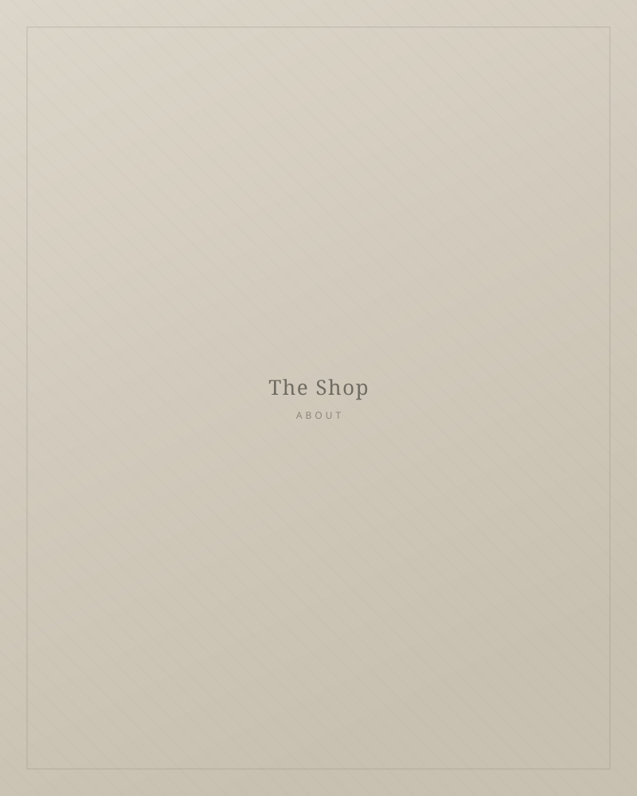
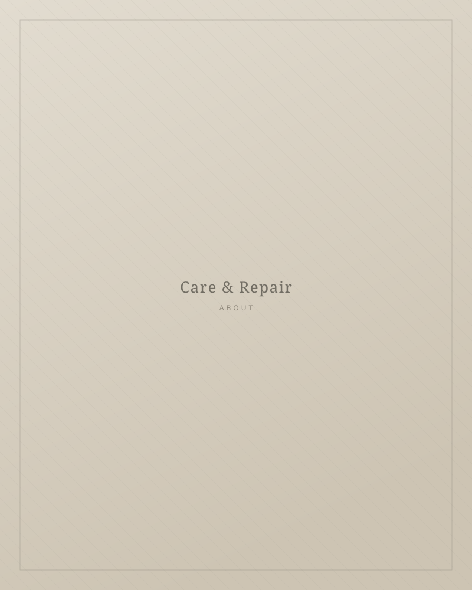

古着屋を
やっています。

Our Story
流行の外側にある服を、
探しています。
2019年、東京の小さな部屋で始めました。年に数回ヨーロッパへ渡り、 蚤の市と古い問屋を回って、気に入ったものだけを持ち帰っています。
派手な一点で驚かせる店ではありません。むしろ、店に並んだときには 少し地味に見えるくらいの服を選んでいます。着てみると身体になじみ、 三年経っても飽きない——そういう服が、結局いちばん長く残るからです。
What we care about
仕入れと検品の基準
Silhouette
肩線と着丈が今の身体に合うか。時代がかって見えるものは、どれほど珍しくても選びません。
Fabric
洗いを重ねてやわらかくなった生地を好みます。手に取ったときの落ち感を最優先に。
Honesty
ダメージは隠さず、写真と文章の両方で記載します。届いてからの「思ったより」をなくすために。

Care & Repair
届く前に、
ひととおり手を入れます。
仕入れた服はすべて、洗濯・クリーニングののち検品しています。 ほつれや取れかけたボタンは可能な範囲で直し、直さないと決めた箇所は 「その服の時間」として商品ページに記載します。
梱包は簡素にしていますが、畳み方と緩衝材だけは丁寧に。 箱を開けた瞬間が、その服との最初の対面になるからです。
Information
店舗情報
| Shop | WANKO Vintage（ワンコ ヴィンテージ） |
|---|---|
| Since | 2019年 |
| Location | 東京都（オンライン販売のみ／実店舗はありません） |
| Sales | メルカリにて販売しています |
| Contact | contact@example.com |